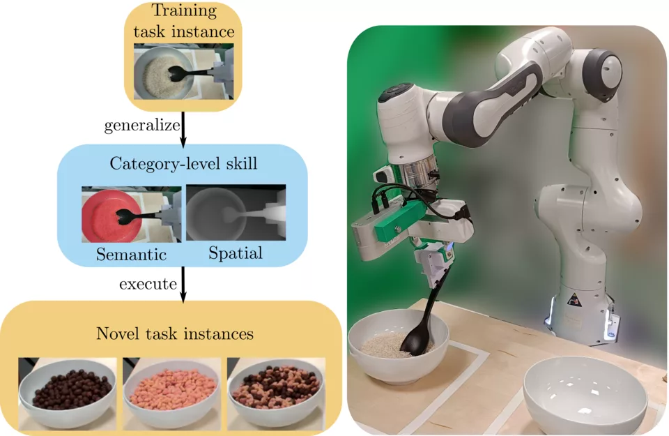

Robot learning researcher
Quantao Yang
I develop intelligent robotic agents that can learn and execute tasks across diverse real-world environments.
Stockholm, Sweden
About
I’m a postdoctoral researcher at KTH Royal Institute of Technology, working with Prof. Olov Andersson and Prof. Danica Kragic. My research focuses on robot learning and manipulation.
I completed my PhD in Computer Science at Örebro University, advised by Prof. Todor Stoyanov and Prof. Johannes A. Stork. I was also a visiting PhD student at UT Austin, advised by Prof. Yuke Zhu.
Selected publications
Academic service
I review for leading robotics journals and conferences.
- RA-L
- T-Mech
- RSS
- ICRA
- IROS
- CoRL